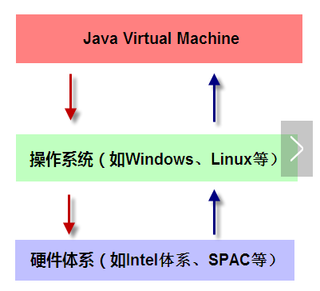
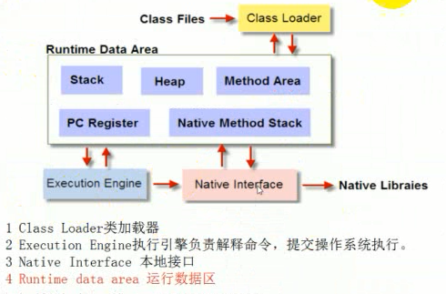
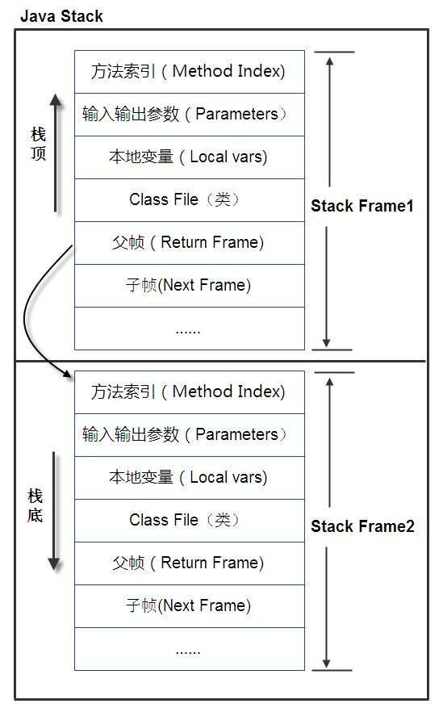
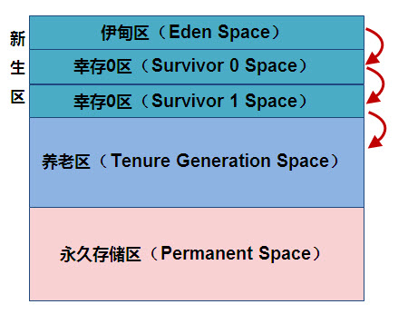

什么是 JVM
JVM 是 Java Virtual Machine（Java虚拟机）的缩写，JVM 是一种用于计算设备的规范，它是一个虚构出来的计算机，是通过在实际的计算机上仿真模拟各种计算机功能来实现的。Java 虚拟机包括一套字节码指令集、一组寄存器、一个栈、一个垃圾回收堆和一个存储方法域。 JVM 屏蔽了与具体操作系统平台相关的信息，使Java程序只需生成在 Java 虚拟机上运行的目标代码（字节码）,就可以在多种平台上不加修改地运行。JVM 在执行字节码时，实际上最终还是把字节码解释成具体平台上的机器指令执行。
Java 语言的一个非常重要的特点就是与平台的无关性。而使用 Java 虚拟机是实现这一特点的关键。一般的高级语言如果要在不同的平台上运行，至少需要编译成不同的目标代码。而引入 Java 语言虚拟机后，Java 语言在不同平台上运行时不需要重新编译。Java 语言使用 Java 虚拟机屏蔽了与具体平台相关的信息，使得 Java 语言编译程序只需生成在 Java 虚拟机上运行的目标代码（字节码），就可以在多种平台上不加修改地运行。Java 虚拟机在执行字节码时，把字节码解释成具体平台上的机器指令执行。这就是 Java 的能够“一次编译，到处运行”的原因。
JVM 的组成
我们先把 JVM 这个虚拟机画出来，如下图所示：

从这张图中我们可以看出，JVM 是运行在操作系统之上的，它与硬件没有直接的交互，我们再来看JVM由哪些部分组成，如下图所示：

Class Loader 类加载器
类加载器的作用是加载类文件到内存，比如编写一个 HelloWord.java 程序，然后通过 javac 编译成 class 文件，那怎么才能加载到内存中被执行呢？Class Loader 承担的就是这个责任，那不可能随便建立一个.class 文件就能被加载的，Class Loader 加载的 class 文件是有格式要求。
Class Loader 只管加载，只要符合文件结构就加载，至于说能不能运行，则不是它负责的，那是由 Execution Engine 负责的。
Execution Engine 执行引擎
执行引擎也叫做解释器（Interpreter） ，负责解释命令，提交操作系统执行。
Native Interface 本地接口
本地接口的作用是融合不同的编程语言为 Java 所用，它的初衷是融合 C/C++ 程序， 诞生的时候是 C/C++ 横行的时候，要想立足，必须有一个聪明的、睿智的调用 C/C++ 程序，于是就在内存中专门开辟了一块区域处理标记为 native 的代码，它的具体做法是 Native Method Stack 中登记 native 方法，在 Execution Engine 执行时加载 native libraies 。目前该方法使用的是越来越少了，除非是与硬件有关的应用，比如通过 Java 程序驱动打印机，或者 Java 系统管理生产设备，在企业级应用中已经比较少见，因为现在的异构领域间的通信很发达，比如可以使用 Socket 通信，也可以使用 Web Service 等等，不多做介绍。
Runtime data area 运行数据区
运行数据区是整个 JVM 的重点。我们所有写的程序都被加载到这里，之后才开始运行，Java 生态系统如此的繁荣，得益于该区域的优良自治。
整个 JVM 框架由加载器加载文件，然后执行器在内存中处理数据，需要与异构系统交互是可以通过本地接口进行，瞧，一个完整的系统诞生了！
JVM 的内存管理
所有的数据和程序都是在运行数据区存放，它包括以下几部分：
Stack 栈
栈也叫栈内存，是 Java 程序的运行区，是在线程创建时创建，它的生命期是跟随线程的生命期，线程结束栈内存也就释放，对于栈来说不存在垃圾回收问题，只要线程一结束，该栈就 Over。问题出来了：栈中存的是那些数据呢？又什么是格式呢？
栈中的数据都是以栈帧（Stack Frame）的格式存在，栈帧是一个内存区块，是一个数据集，是一个有关方法（Method）和运行期数据的数据集，当一个方法 A 被调用时就产生了一个栈帧 F1，并被压入到栈中，A 方法又调用了 B 方法，于是产生栈帧 F2 也被压入栈，执行完毕后，先弹出 F2 栈帧，再弹出 F1 栈帧，遵循“先进后出”原则。
那栈帧中到底存在着什么数据呢？栈帧中主要保存3类数据：本地变量（Local Variables），包括输入参数和输出参数以及方法内的变量；栈操作（Operand Stack），记录出栈、入栈的操作；栈帧数据（Frame Data），包括类文件、方法等等。光说比较枯燥，我们画个图来理解一下 Java 栈，如下图所示：

图示在一个栈中有两个栈帧，栈帧2是最先被调用的方法，先入栈，然后方法2又调用了方法1，栈帧1处于栈顶的位置，栈帧2处于栈底，执行完毕后，依次弹出栈帧1和栈帧2，线程结束，栈释放。
Heap 堆内存
jvm 中分为堆和方法区，堆又进一步分为新生代和老年代，方法区为永久代。
堆中区分的新生代和老年代是为了垃圾回收，新生代中的对象存活期一般不长，而老年代中的对象存活期较长，所以当垃圾回收器回收内存时，新生代中垃圾回收效果较好，会回收大量的内存，而老年代中回收效果较差，内存回收不会太多。
基于以上特性，新生代中一般采用复制算法，因为存活下来的对象是少数，所需要复制的对象少，而老年代对象存活多，不适合采用复制算法，一般是标记整理和标记清除算法。
因为复制算法需要留出一块单独的内存空间来以备垃圾回收时复制对象使用，所以将新生代分为 eden 区和两个 survivor 区，每次使用 eden 和一个 survivor 区，另一个 survivor 作为备用的对象复制内存区。
一个 JVM 实例只存在一个堆类存，堆内存的大小是可以调节的。类加载器读取了类文件后，需要把类、方法、常变量放到堆内存中，以方便执行器执行，堆内存分为三部分：
Permanent Space永久存储区
永久存储区是一个常驻内存区域，用于存放JDK自身所携带的Class，Interface的元数据，也就是说它存储的是运行环境必须的类信息，被装载进此区域的数据是不会被垃圾回收器回收掉的，关闭 JVM 才会释放此区域所占用的内存。Young Generation Space新生区
新生区是类的诞生、成长、消亡的区域，一个类在这里产生，应用，最后被垃圾回收器收集，结束生命。新生区又分为两部分：伊甸区（Eden space）和幸存者区（Survivor pace），所有的类都是在伊甸区被new出来的。幸存区有两个： 0区（Survivor 0 space）和1区（Survivor 1 space）。当伊甸园的空间用完时，程序又需要创建对象，JVM 的垃圾回收器将对伊甸园区进行垃圾回收，将伊甸园区中的不再被其他对象所引用的对象进行销毁。然后将伊甸园中的剩余对象移动到幸存0区。若幸存0区也满了，再对该区进行垃圾回收，然后移动到1区。那如果1区也满了呢？再移动到养老区。Tenure generation space养老区
养老区用于保存从新生区筛选出来的 JAVA 对象，一般池对象都在这个区域活跃。
三个区的示意图如下：

Method Area 方法区
方法区是被所有线程共享，该区域保存所有字段和方法字节码，以及一些特殊方法如构造函数，接口代码也在此定义。
PC Register 程序计数器
每个线程都有一个程序计数器，就是一个指针，指向方法区中的方法字节码，由执行引擎读取下一条指令。
Native Method Stack 本地方法栈
JVM 垃圾回收
GC（Garbage Collection）的基本原理：将内存中不再被使用的对象进行回收，GC 中用于回收的方法称为收集器，由于 GC 需要消耗一些资源和时间，Java 在对对象的生命周期特征进行分析后，按照新生代、旧生代的方式来对对象进行收集，以尽可能的缩短 GC 对应用造成的暂停
- 对新生代的对象的收集称为
minor GC； - 对旧生代的对象的收集称为
Full GC； - 程序中主动调用
System.gc()强制执行的GC为Full GC。
不同的对象引用类型， GC 会采用不同的方法进行回收，JVM 对象的引用分为了四种类型：
- 强引用：默认情况下，对象采用的均为强引用（这个对象的实例没有其他对象引用，
GC时才会被回收） - 软引用：软引用是 Java 中提供的一种比较适合于缓存场景的应用（只有在内存不够用的情况下才会被
GC） - 弱引用：在
GC时一定会被GC回收 - 虚引用：由于虚引用只是用来得知对象是否被
GC
JVM 相关问题
1. 问：堆和栈有什么区别
答：堆是存放对象的，但是对象内的临时变量是存在栈内存中，如例子中的 methodVar 是在运行期存放到栈中的。
栈是跟随线程的，有线程就有栈，堆是跟随 JVM 的，有 JVM 就有堆内存。
2. 问：堆内存中到底存在着什么东西？
答：对象，包括对象变量以及对象方法。
3. 问：类变量和实例变量有什么区别？
答：静态变量是类变量，非静态变量是实例变量，直白的说，有 static 修饰的变量是静态变量，没有 static 修饰的变量是实例变量。静态变量存在方法区中，实例变量存在堆内存中。
4. 问：我听说类变量是在JVM启动时就初始化好的，和你这说的不同呀！
答：那你是道听途说，信我的，没错。
5. 问：Java 的方法（函数）到底是传值还是传址？
答：都不是，是以传值的方式传递地址，具体的说原生数据类型传递的值，引用类型传递的地址。对于原始数据类型，JVM 的处理方法是从 Method Area 或 Heap 中拷贝到 Stack，然后运行 frame 中的方法，运行完毕后再把变量指拷贝回去。
6. 问：为什么会产生 OutOfMemory 产生？
答：一句话：Heap 内存中没有足够的可用内存了。这句话要好好理解，不是说 Heap 没有内存了，是说新申请内存的对象大于 Heap 空闲内存，比如现在 Heap 还空闲1M，但是新申请的内存需要1.1M，于是就会报 OutOfMemory 了，可能以后的对象申请的内存都只要0.9M，于是就只出现一次 OutOfMemory，GC 也正常了，看起来像偶发事件，就是这么回事。但如果此时 GC 没有回收就会产生挂起情况，系统不响应了。
7. 问：我产生的对象不多呀，为什么还会产生 OutOfMemory？
答：你继承层次忒多了，Heap 中 产生的对象是先产生 父类，然后才产生子类，明白不？
8. 问：OutOfMemory 错误分几种？
答：分两种，分别是“OutOfMemoryError:java heap size”和“OutOfMemoryError: PermGen space”，两种都是内存溢出，heap size 是说申请不到新的内存了，这个很常见，检查应用或调整堆内存大小。
“PermGen space”是因为永久存储区满了，这个也很常见，一般在热发布的环境中出现，是因为每次发布应用系统都不重启，久而久之永久存储区中的死对象太多导致新对象无法申请内存，一般重新启动一下即可。
9. 问：为什么会产生 StackOverflowError？
答：因为一个线程把 Stack 内存全部耗尽了，一般是递归函数造成的。
10. 问：一个机器上可以看多个JVM吗？JVM之间可以互访吗？
答：可以多个 JVM，只要机器承受得了。JVM 之间是不可以互访，你不能在 A-JVM 中访问 B-JVM 的 Heap 内存，这是不可能的。在以前老版本的 JVM中，会出现 A-JVM Crack 后影响到 B-JVM，现在版本非常少见。
11. 问：为什么 Java 要采用垃圾回收机制，而不采用 C/C++ 的显式内存管理？
答：为了简单，内存管理不是每个程序员都能折腾好的。
12. 问：为什么你没有详细介绍垃圾回收机制？
答：垃圾回收机制每个 JVM 都不同，JVM Specification 只是定义了要自动释放内存，也就是说它只定义了垃圾回收的抽象方法，具体怎么实现各个厂商都不同，算法各异，这东西实在没必要深入。
13. 问：JVM 中到底哪些区域是共享的？哪些是私有的？
答：Heap 和 Method Area 是共享的，其他都是私有的，
14. 问：什么是 JIT，你怎么没说？
答：JIT 是指 Just In Time，有的文档把 JIT 作为 JVM 的一个部件来介绍，有的是作为执行引擎的一部分来介绍，这都能理解。Java 刚诞生的时候是一个解释性语言，别嘘，即使编译成了字节码（byte code）也是针对 JVM 的，它需要再次翻译成原生代码（native code）才能被机器执行，于是效率的担忧就提出来了。Sun 为了解决该问题提出了一套新的机制，好，你想编译成原生代码，没问题，我在 JVM 上提供一个工具，把字节码编译成原生码，下次你来访问的时候直接访问原生码就成了，于是JIT就诞生了，就这么回事。
15. 问：JVM 还有哪些部分是你没有提到的？
答：JVM 是一个异常复杂的东西，写一本砖头书都不为过，还有几个要说明的：
常量池（constant pool）：按照顺序存放程序中的常量，并且进行索引编号的区域。比如 int i =100，这个100就放在常量池中。安全管理器（Security Manager）：提供 Java 运行期的安全控制，防止恶意攻击，比如指定读取文件，写入文件权限，网络访问，创建进程等等，Class Loader 在 Security Manager 认证通过后才能加载 class 文件的。方法索引表（Methods table）：记录的是每个method的地址信息，Stack和Heap中的地址指针其实是指向Methods table地址。
16. 问：为什么不建议在程序中显式的生命 System.gc()？
答：因为显式声明是做堆内存全扫描，也就是 Full GC，是需要停止所有的活动的（Stop The World Collection），你的应用能承受这个吗？
17. 问：JVM 有哪些调整参数？
答：非常多，自己去找，堆内存、栈内存的大小都可以定义，甚至是堆内存的三个部分、新生代的各个比例都能调整。
If you like this blog or find it useful for you, you are welcome to comment on it. You are also welcome to share this blog, so that more people can participate in it. If the images used in the blog infringe your copyright, please contact the author to delete them. Thank you !